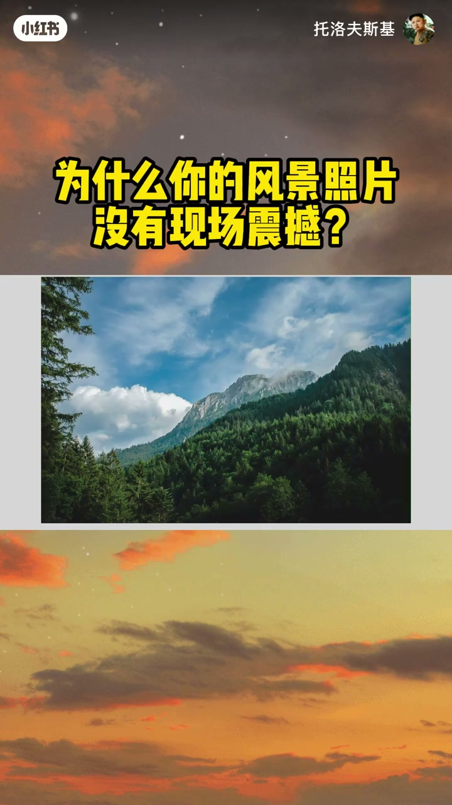
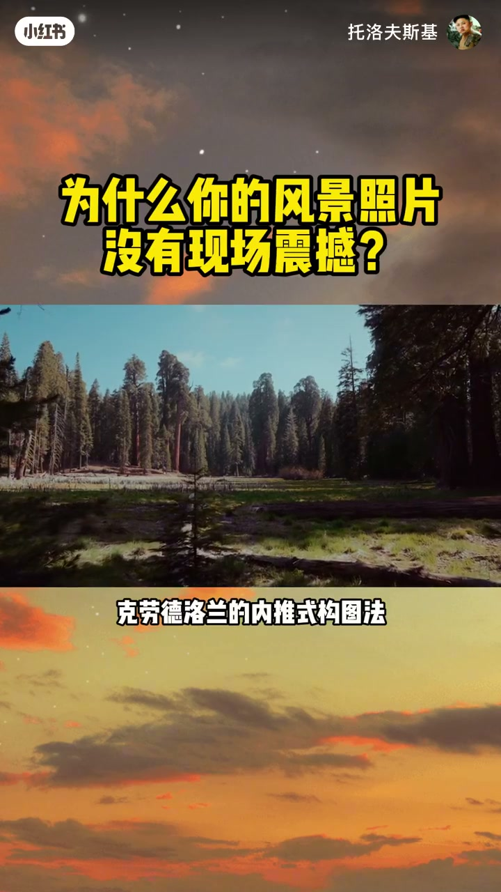
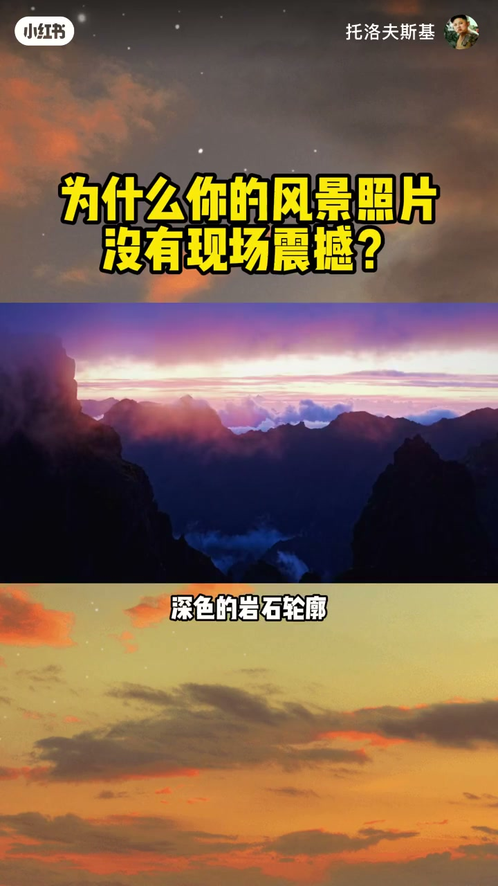
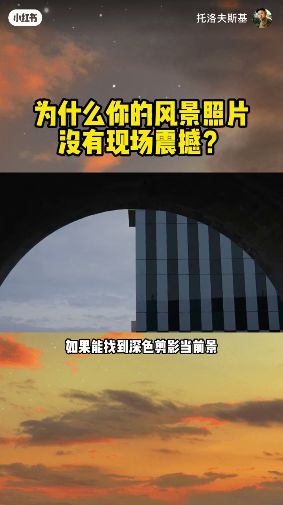
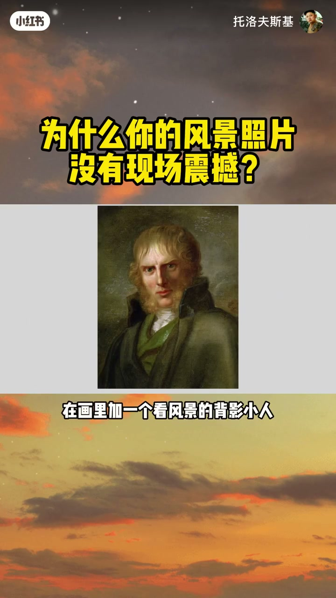
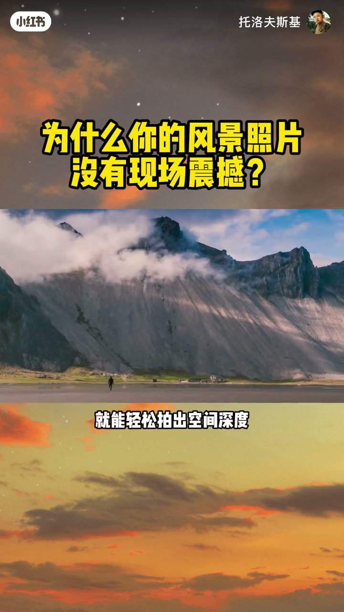
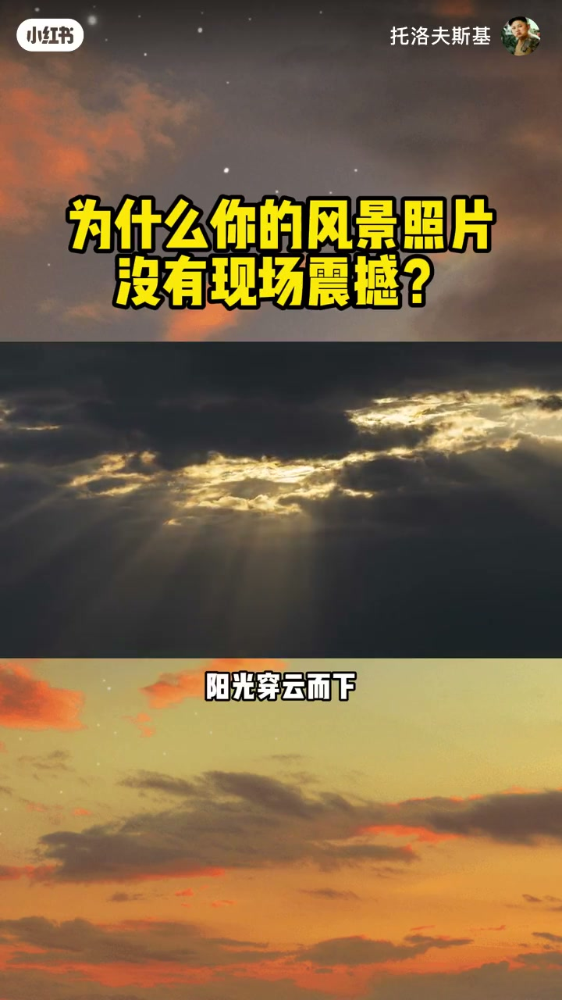
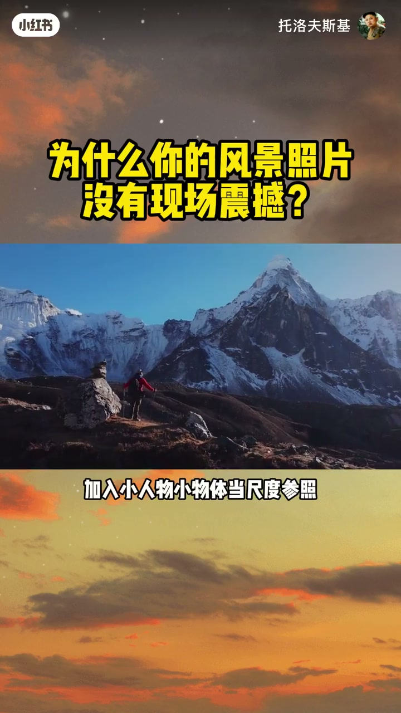

内容要点
「为什么你的风景照片没有现场震撼？」教程要点：拍风景总翻车 → 明明亲眼看到的山河超震撼 → 一按快门就变普通 → 照片里完全找不到现场的壮阔感；详见正文。
知识结构
拍风景总翻车
纵深直接拉满
不用刻意避开人物
- 拍风景总翻车
- 明明亲眼看到的山河超震撼
- 一按快门就变普通
- 照片里完全找不到现场的壮阔感
- 你是不是也这样
拍风景总翻车
00:00–01:35拍风景总翻车
拍风景总翻车；明明亲眼看到的山河超震撼；一按快门就变普通；照片里完全找不到现场的壮阔感；你是不是也这样；难道是相机不够好；换了镜头也没用；今天彻底给你讲明白；根本不是设备的故；三维的自然空间被压缩进平面的照片里；深度和尺度感自然就消失了；怎么拍出画面里的空间感；看看西方经典风景画；你就能找到标准答案；几百年前的风景画家；早就把空间感玩明白了；要在平面画布上还原；自然的雄浑壮阔；藏了超多精巧的视觉设计；全是可以照搬的技巧；今天就教你三招；油画及构图法；让你的风景照瞬间有立体感；有生命力；第一招,来自17世纪法国画家；克劳德·洛兰的内推式构图法；核心就是用前景；把视线往画面里收；画家会特意在画面边缘安排；树木、岩石、建筑轮廓当前景框架；咱们很多人拍风景；上来就只拍远处的山海；广角一开全是大远景；这样拍出来的画面特别平；完全没有纵深透视感；看着就像一张贴纸；以后拍风景先别急着按快门；先找找眼前的前景元素；可以是脚下的地面、草地；也可以是树枝的缝隙；建筑的墙面、敞开的帐篷门；深色的岩石轮廓；把这些元素放在画框边缘；它们就像一个天然画框；把观众的视线引向深处的风景；画面瞬间就有了立体感


01:34–03:07纵深直接拉满
纵深直接拉满；有人说我找不到前景元素怎么办；没关系；没有明显前景也能做出纵深感；只要利用好画面里的透视层次；比如层层叠叠的山巒；就是天然的层次；前景元素不够的时候；就想办法拉开前后景的景深对比；你可以拉长焦距；压缩空间、突出层次轮廓；同样能传递出很强的空间感；如果能找到深色剪影当前景；一定要试试这个方法；深色的前景剪影就像画框；能把明亮的背景往远处推；就这一招；画面的景深和立体感直接提升一个档次；不光风景照；所有题材都能用；拍的时候多留意前景元素的位置；接下来第二招；怎么体现自然的宏大尺度；很多人拍大瀑布、拍高山；拍出来完全没气势；因为画面里没有参照物；观众根本看不出这山到底有多大；瀑布到底有多壮观；没有对比就没有尺度感；德国浪漫主义画家弗里德里西；就总在画里加一个看风景的背影小人；瞬间就烘托出了自然的壮阔；咱们拍风景是不是总等路人走开；怕人抢镜；恰恰相反；你得把人用起来；而且用法特别巧妙；在画面角落放一个眺望风景的人；或者一间小木屋；一辆车都可以；有了这些元素,观众的大脑会自动；用熟悉的人物物体尺寸；去对比大山大水的大小；尺度感瞬间就出来了；这时候你再看画面；压迫感和壮阔感直接拉满


03:06–04:36不用刻意避开人物
不用刻意避开人物；把它当成自然的比例尺；就能轻松拍出空间深度；以后拍风景不妨多等一等；等路人等小动物进入画面；照片瞬间就有了灵魂；第三招,别只执着于大晴天；你去看油画大师威廉的作品；越是雾气重下雨的天气；画面越有氛围感；它就是用光线和雾气的碰撞；打造出超强的空间立体感；有动感的天气元素；加上光线层次；真正有戏剧感的风景大片；全是坏天气拍出来的；万里无云的大晴天；反而容易拍得平淡；云层厚重的时候；阳光穿云而下；雨后山间雾气缭绕；风吹动原野的草浪；这些天气变化都会带来；丰富的层次和独特氛围；以后别一阴天就把相机收起来不拍了；恰恰相反；这种湿润朦胧的空气；能让你的照片拍出水彩油画般的质感；另外不管什么天气；一定要赶日出日落的黄金时刻去拍；为什么?这个时间段的光线；有色彩有温度；能给任何风景都加上情绪和深度；出片率直接翻倍；总结一下,用好前景剪影；做画框搭建纵深感；加入小人物小物体当尺度参照；抓住阴天雨后的氛围感；再用好黄金时刻的光线；记住这三点多练；普通的风景照也能变得；有生气有质感；拍出明化一样的氛围；觉得有用的朋友别忘了点赞收藏；有什么想看的摄影技巧评论区告诉我；咱们下期见




口述/画面要点（40段）
结合 Whisper medium 与画面大字整理；专有名词已校对。
拍风景总翻车
明明亲眼看到的山河超震撼
一按快门就变普通
照片里完全找不到现场的壮阔感
你是不是也这样
难道是相机不够好
换了镜头也没用
今天彻底给你讲明白
根本不是设备的故
三维的自然空间被压缩进平面的照片里
深度和尺度感自然就消失了
怎么拍出画面里的空间感
看看西方经典风景画
你就能找到标准答案
几百年前的风景画家
早就把空间感玩明白了
要在平面画布上还原
自然的雄浑壮阔
藏了超多精巧的视觉设计
全是可以照搬的技巧
今天就教你三招
油画及构图法
让你的风景照瞬间有立体感
有生命力
第一招,来自17世纪法国画家
克劳德·洛兰的内推式构图法
核心就是用前景
把视线往画面里收
画家会特意在画面边缘安排
树木、岩石、建筑轮廓当前景框架
咱们很多人拍风景
上来就只拍远处的山海
广角一开全是大远景
这样拍出来的画面特别平
完全没有纵深透视感
看着就像一张贴纸
以后拍风景先别急着按快门
先找找眼前的前景元素
可以是脚下的地面、草地
也可以是树枝的缝隙